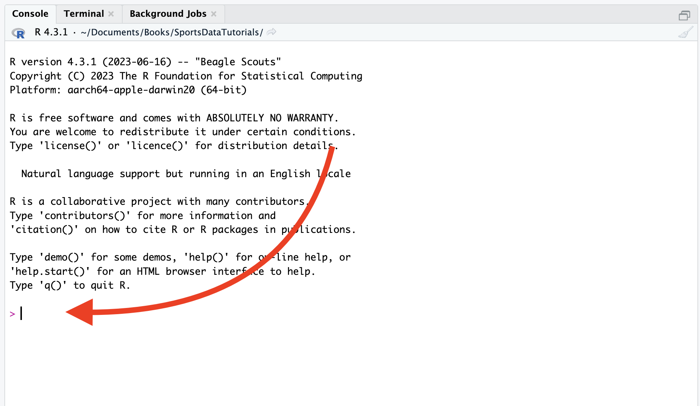
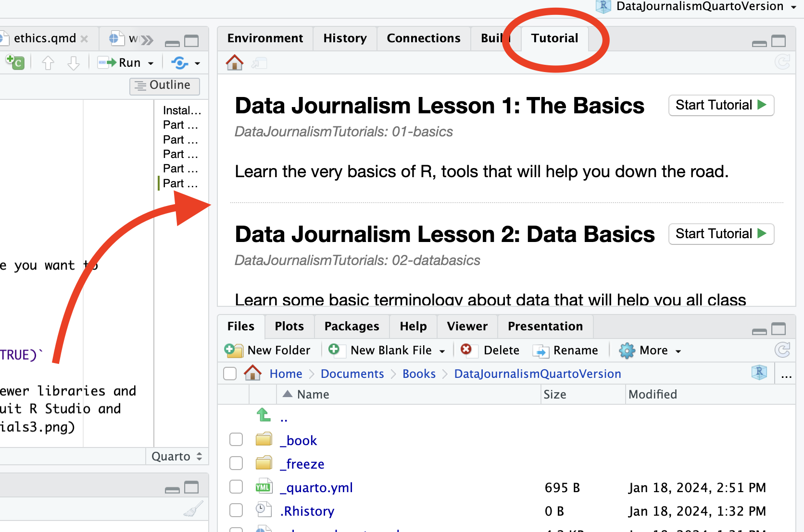

The Curriculum
An investigative journey through the architecture of data. From the basics of R to publication-ready charts and interactive maps — all using real datasets, localized to your state.

The Fundamentals
Establishing the foundation of R and the Tidyverse. We begin by understanding the technical environment and start working with real data immediately — no prior coding experience required.
- The Basics
- Data Basics
- Aggregates, Parts 1 & 2
- Filtering Data
- Mutating Data
Data Realities
The unglamorous but vital heart of journalism. Learn to wrangle messy public records into structured, verifiable evidence — working through dates, dirty text, mismatched identifiers, and government APIs.
- Working with Dates
- Data Smells
- Janitor
- Cleaning Text
- Joining Data
- Working with Spreadsheets
- Getting Census Data via API

Visualizing with ggplot2
Aesthetics meet evidence. Mastering the layered grammar of ggplot2 to create publication-ready charts — from simple bar charts to scatterplots, waffle charts, slope charts, and dumbbell plots. Thirteen lessons covering every common chart type in data journalism.
Publishing with Datawrapper
Take your analysis to the web. Datawrapper lets you publish professional, interactive charts and maps without writing a line of HTML — the tool of choice for newsrooms worldwide, and a natural next step after ggplot2.
- Datawrapper for Charts
- Datawrapper for Maps
Supporting Materials
Everything you need to get the most out of the curriculum — datasets, source code, and setup instructions.
Datasets
Real-world data from the Census, EPA, USDA, NTSB, and more — localized to your state.
codeGitHub Repository
The full source code for all 28 tutorials. Open source under GPL-3.0.
downloadInstallation Guide
Step-by-step setup instructions for R, RStudio, and the tutorials package.